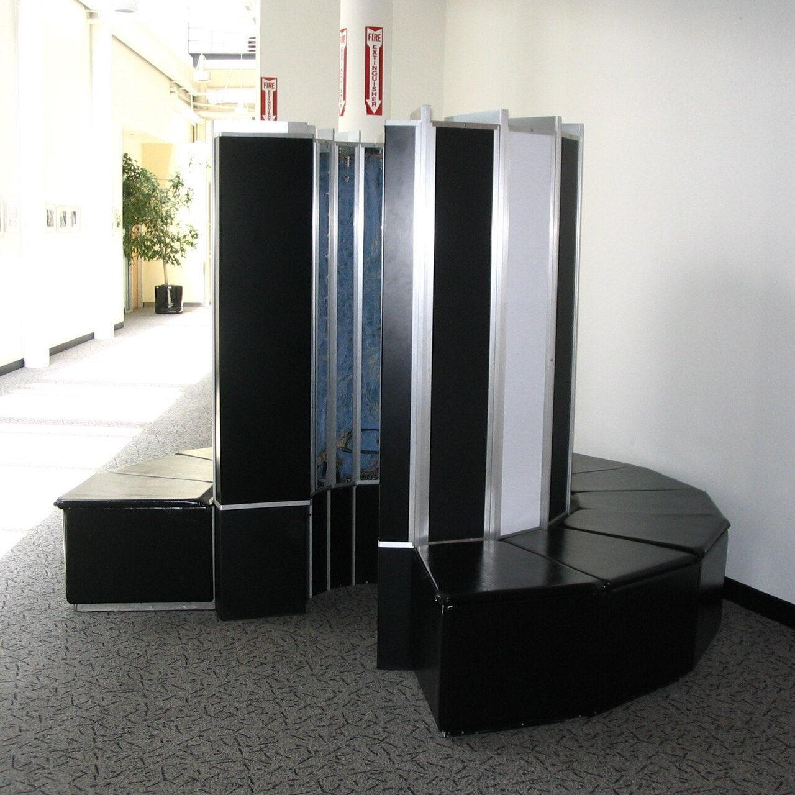

In the quiet town of Chippewa Falls, Wisconsin, in the mid-1970s, a revolution was taking shape in a most unusual form. It wasn't a sleek silicon-valley rectangle or a towering room-sized bank of cabinets. Instead, it was a circular structure of upholstered benches and copper-plated panels—a machine that looked more like a piece of high-end futuristic furniture than the most powerful computer on Earth. This was the Cray-1, the magnum opus of Seymour Cray, the man often called the "Father of Supercomputing."
The Cray-1 wasn't just a machine; it was a statement. At a time when the world was beginning to wake up to the potential of personal computing, Seymour Cray was focused on the extreme edge of possibility. He wanted to build a machine that could solve the unsolvable: weather forecasting, nuclear weapon simulations, and complex aerodynamic models. To do this, he didn't just need more power; he needed a fundamental rethink of how data moved through a processor.
The most striking feature of the Cray-1 is its "C" shape. While modern observers often mistake the padded base for a place for tired engineers to sit (which they occasionally did), the shape was born from strict electrical necessity. Seymour Cray understood that at 80 MHz—a blistering speed for 1975—the time it took for an electrical signal to travel down a wire was a significant bottleneck. By curving the machine into a 270-degree arc, Cray minimized the length of the backplane wiring. No wire in the machine was longer than four feet, ensuring that signals could propagate between any two components within a single clock cycle.

Inside this frame, the Cray-1 was packed with over 200,000 integrated circuits. Unlike many of its contemporaries, which used thousands of different types of chips, the Cray-1 relied almost exclusively on just four types of high-speed Emitter-Coupled Logic (ECL) chips. This simplicity in component choice allowed for tighter quality control and easier maintenance, though the density of these chips created a heat problem of unprecedented proportions.
"One of my problems is I'm a mathematician, and I tend to think in terms of numbers. But when you build a computer, you have to think in terms of physics."
— Seymour Cray
Powering 200,000 ECL chips generated an immense amount of heat—approximately 115 kilowatts. Traditional air cooling was out of the question; the machine would have melted itself within minutes. Cray's solution was as bold as the machine's shape: a liquid cooling system using Freon. Copper cold bars were sandwiched between the circuit boards, and Freon was circulated through stainless steel tubes embedded in these bars. This heat was then transferred to a large water-cooled heat exchanger in the floor. The "benches" that surrounded the base of the machine weren't just for show—they housed the massive power supplies and the Freon plumbing required to keep the system's core at a stable temperature.
While the hardware design was a marvel of physics, the architectural breakthrough of the Cray-1 was its implementation of vector processing. Most computers of the era were scalar processors, meaning they performed one operation on one piece of data at a time (1+1=2). The Cray-1 could perform a single operation on an entire array, or "vector," of data simultaneously. This allowed it to achieve a peak performance of 160 million floating-point operations per second (MFLOPS), nearly ten times faster than its nearest competitor, the CDC 7600 (which Seymour Cray had also designed).
This leap in performance transformed scientific research. For the first time, meteorologists could run global weather models with enough resolution to be useful for long-term prediction. The automotive industry used the Cray-1 to perform the first-ever computer-simulated crash tests, saving millions in physical prototyping. In the secretive world of Los Alamos and Lawrence Livermore National Laboratories, the Cray-1 became the indispensable tool for the Cold War's most complex nuclear physics simulations.
The first Cray-1, serial number 001, was delivered to Los Alamos National Laboratory in 1976 for a six-month trial. The lab was so impressed that they purchased it for $8.8 million (equivalent to roughly $45 million today). Over the next seven years, Cray Research would sell over 80 units of the Cray-1 and its successor, the Cray-1S. Each machine was custom-built, and customers could choose the color of the padded benches—ranging from a conservative corporate blue to a vibrant "Cray Red."
The Cray-1 remains an icon of the era when computing was moving from the basement to the forefront of human achievement. It was a machine that refused to look like a machine, designed by a man who refused to follow the rules of traditional engineering. Today, the smartphone in your pocket has many thousands of times the computing power of a Cray-1, but it lacks the soul of the circular monolith that once defined the very limit of what humanity could calculate.
Designed by Seymour Cray, the Cray-1 was the world's first commercially successful vector processor. Its unique C-shape was engineered to minimize wire length, allowing for an unprecedented 80 MHz clock speed. Cooled by a revolutionary Freon system, it delivered 160 MFLOPS of peak power, setting the standard for high-performance computing for a decade. This unit represents the pinnacle of 1970s electrical engineering and industrial design.